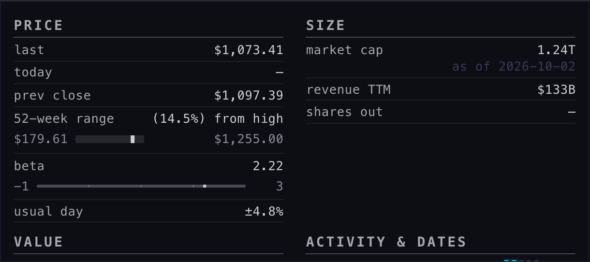
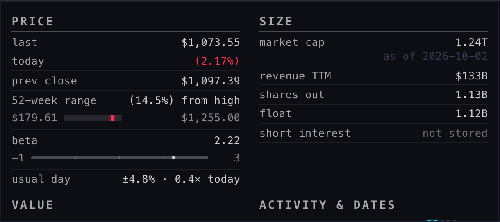
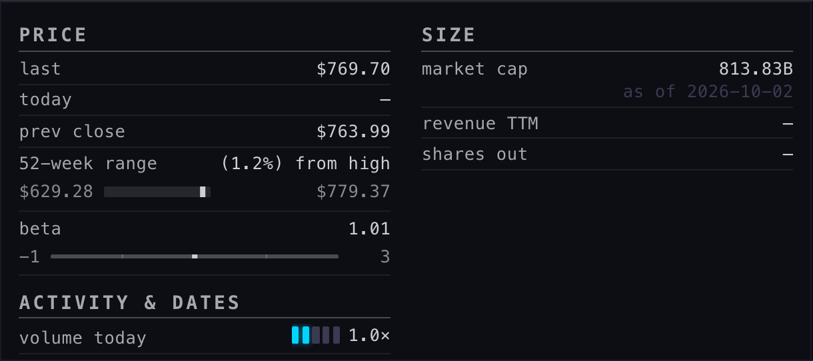
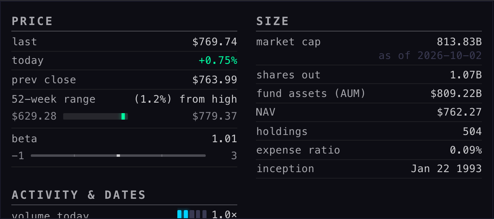
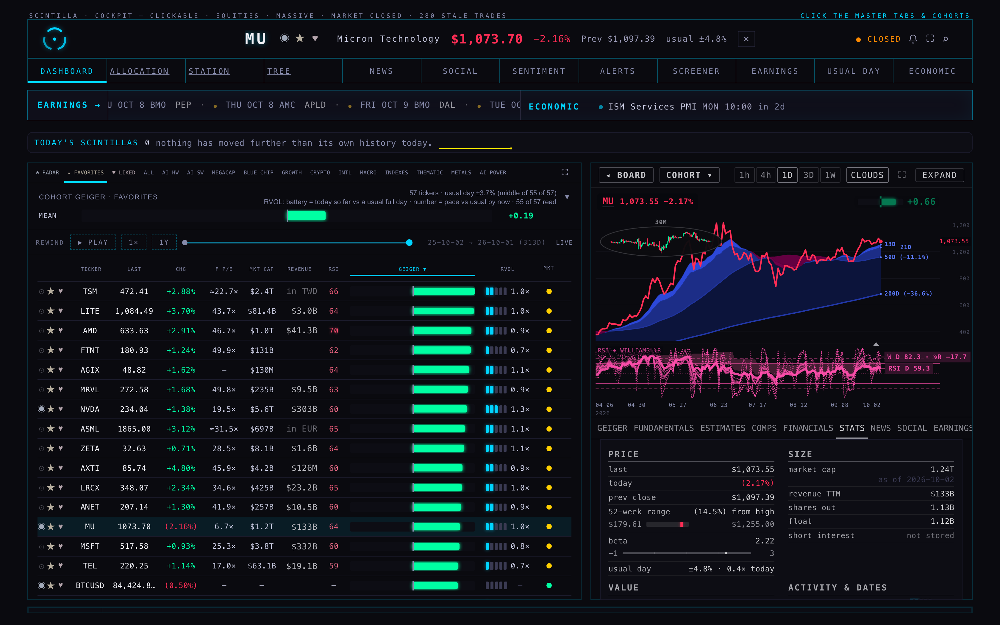

H7 rebuilt the STATS tab as six blocks, and left dashes where the store had no number: MU said shares out —, and the float, the short interest and the dividend were not drawn at all because no table held them. Your standing rule for the company view is that every fact shown is a real fact or a plain "not stored" — never a silent dash. This branch does three things: it reads the missing facts from FMP into the database, it makes every empty cell say why it is empty, and it stops funds from showing "earnings" they never had.

shares out —. There is no float, no short interest, no dividend row anywhere on the tab. PRICE prints today — too: after the close the stored quote row carries no change figure.
shares out 1.13B and float 1.12B are FMP's numbers of 2 Oct; short interest · not stored says in dim grey that FMP carries none (hover tells you so). today (2.17%) now comes from the board's own reading when the quote row has none — the same figure the header shows.
revenue TTM —, shares out —, and none of the fund's own facts: the etf_info table held one row in total (AGIX), so there was nothing to draw. Lower on the tab, hidden under the fold here, sat last report Nov 29 2017 — an old FMP calendar row, not a report.
shares out 1.07B, fund assets (AUM) $809.22B, NAV $762.27, holdings 504, expense ratio 0.09%, inception Jan 22 1993. No revenue row (not a fund's fact), no VALUE / GROWTH / BALANCE blocks, and no "report" dates. Its dividend is kept: $1.89 · ex Sep 18, yield 1.0%.
A headless probe opened the company data for 50 of the board's names — 40 companies and 10 funds (SPY, QQQ, IWM, SMH, XLK always in), picked the same way before and after — drew the STATS tab with the page's own function, and read every row back. The served set it drew from is the page's whole-universe list: 546 names (468 companies, 71 funds, and 7 with no company_profile row at all — MOG.A and the six treasury-yield series, which the tab answers with its "no stats inputs" line and which the probe therefore skipped).
| row | BEFORE · cells printing "—" | why (before) | AFTER · cells printing "not stored" / "no reading" | why (after) |
|---|---|---|---|---|
| shares out | 50 | column empty 50 | 0 | a value now |
| today | 50 | live quote carries no change figure 50 | 0 | a value now |
| revenue TTM | 13 | column empty 10 · row missing (fundamentals) 3 | 3 | row missing (fundamentals) 3 |
| trailing P/E | 12 | column empty 9 · row missing (fundamentals) 3 | 3 | row missing (fundamentals) 3 |
| earnings yield | 12 | column empty 9 · row missing (fundamentals) 3 | 3 | row missing (fundamentals) 3 |
| forward P/E | 9 | column empty 8 · row missing (analyst_estimates) 1 | 0 | a value now |
| EPS (ttm) | 4 | row missing (fundamentals) 3 · column empty 1 | 3 | row missing (fundamentals) 3 |
| PT · avg | 1 | — | 0 | a value now |
| short interest | 0 | — | 40 | not carried by FMP (no source) 40 |
| all rows | 151 of 1568 cells drawn | 52 of 1765 cells drawn · dashes: 0 | ||
| fund "report" rows (SPY, QQQ, XLK, EWY) | 4 | old FMP calendar rows drawn as reports | 0 | the fund rule |
"column empty" = the row exists in its table but that field is NULL · "row missing" = the name has no row in that table at all · "never stored" = no table had a column for it before H8 · "not carried by FMP" = no source we read carries it. After H8 a loss-making company's P/E prints none · loss — a fact (its EPS is at or below zero), counted as a value, not as "not stored".
A throw-away Fly machine of the batch app read FMP for every one of the 543 names in company_profile and printed numbers only (1,158 calls, every one answered 200; the key never left Fly and never appears in any file). The Mac loaded the printout with UPDATE statements keyed by ticker, 100 names per transaction.
| fact | FMP route · field | names with a value | what it did not give |
|---|---|---|---|
| shares outstanding | /stable/shares-float · outstandingShares | 526 of 543 | the 17 non-equity names: 11 crypto pairs, the 6 futures (CL, ES, NQ, GC, SI, DX) and VIX, plus BRK.A |
| the float | /stable/shares-float · floatShares | 462 of 543 | the same 17, and 64 of the 72 funds (a fund's float is not a fact FMP keeps; the tab does not draw a float row for funds) |
| last dividend per share, its ex-date | /stable/dividends · the newest row's dividend and date | 364 of 543 | 179 names come back with an empty list — stored as "none on record" (0), which the tab prints as a fact, not as "not stored". 48 of the 364 ex-dates are still ahead (a declared dividend not yet gone ex). |
| dividend yield | /stable/dividends · the newest row's yield (annualised at that day's price) | 364 of 543 | a yield at the ex-date's price, not today's — said so on hover |
| short interest | none | 0 | FMP does not carry it. /stable/short-interest answers 404; /stable/profile, /stable/quote and /stable/key-metrics-ttm have no such field (probed 2 Oct, the key names of every answer recorded). The row prints "not stored" with that reason on hover. |
| fund facts (fee, AUM, holdings, inception, NAV) | /stable/etf/info | 72 of 72 funds | nothing missing; the dividend frequency ("Quarterly") was read but has no column, so it is not shown |
The printout is kept beside this page, numbers only: deliverables/20261002/stats-facts/data/h8-fmp-facts.json. The Fly script is scripts/h8-fmp-facts.mjs; the load step that turns the printout into SQL is scripts/h8-load-facts.py.
Additive only, as your standing rule allows. The rollback was written before the ALTER ran:
/Users/alanharvey/SCINTILLA 0.5/_archive/backend-fix-20260928/ROLLBACK-company-profile-h8-20261002.sql
| table | change | measured after the load |
|---|---|---|
| company_profile | six new nullable columns: shares_outstanding, float_shares, dividend_per_share, dividend_yield, ex_dividend_date, facts_as_of (the moment FMP gave the facts) | 543 of 543 rows stamped facts_as_of 2026-10-02 20:24Z · 526 with shares · 462 with a float · 543 with a dividend fact (179 of them "none on record") |
| company_profile | the older, empty shares_out column filled with the same share count (0 of 543 rows had a value before; the Station's DCF template reads this column) | 526 of 543 filled |
| etf_info | 71 fund rows inserted (fee, AUM, holdings, inception, NAV, sector weights); AGIX, the one row that existed, untouched | 72 rows, every one with fee, AUM, holdings, inception and NAV |
| not added | short_interest and short_ratio — FMP carries neither, so a column nothing could fill was not created; the row on the tab says "not stored" instead | — |
Nothing existing was dropped, renamed or overwritten. A side effect worth knowing: the FINANCIALS tab of every fund, which reads the same etf_info table, now has its overview facts too (it used to say "pending backfill").
A row with no value prints not stored in the dim grey of the "as of" notes, and its hover says which table and column is empty. A live reading that is not there says no reading. A loss-maker's P/E says none · loss. A name FMP lists no dividend for says none on record. The one thing H7 did right is kept: a block with no value at all (a fund's GROWTH) is not drawn — not a column of "not stored" either.
Any name the page already treats as non-operating (company_profile.is_etf, or a crypto name) gets no "next report" / "last report" rows, no VALUE, GROWTH or BALANCE block, no revenue row, no float row — and lists its own five facts every time, "not stored" where etf_info lacks one. Checked in the walk: SPY, QQQ, IWM, SMH, XLK. One trap avoided: FMP also flags O (Realty Income) as a fund (is_fund = true) — it is a REIT that reports every quarter, so that flag is read but never used as the gate.
Before (live b2d0b5e): 1719 tests, 1712 pass, 5 fail — the five known on live (the Indicator Lab checkpoint, the age function, readiness, saved review charts, xfeed-publish). After, on the final files: 1725 tests, 1717 pass, 6 fail — the same five plus "the Clock: rewind, play to the end, and the 45-second return to live", a timing test that passes when its file runs alone (6 of 6; the full run shared the machine with three headless browsers). Nothing new is broken.
Six new tests (tests/h8-stats-facts-20261002.test.mjs): the "not stored" rule in the row, bar, rule and fill builders; MU with the loaded facts and no dash anywhere; a company whose facts are not loaded, a name with no dividend, a loss-maker; the fund rule on SPY; a fund with no etf_info row, a crypto name and the REIT trap; the wider read, the dim grey and the trial copy. Four older assertions that pinned the retired dash or the old fund behaviour were moved to the new rule (H7's SPY and margin-bar checks, the R3 one-screen stubs, numeric-closure's loss-maker).
shares_out column was filled, not retired (see decision 1).| # | decision | my recommendation |
|---|---|---|
| 1 | company_profile now carries the share count twice: the new shares_outstanding (with its date) and the older shares_out, filled so the Station's DCF keeps reading it. Retiring shares_out is a destructive change — yours to call. | Leave both for now; retire shares_out in a later Station lane once its DCF reads shares_outstanding. |
| 2 | The short interest · not stored row is permanent until a source exists — a reminder on every company, or noise? | Keep it: it is exactly your rule (a plain "not stored", never a silent gap), and it names the missing source. If a source is wanted, FINRA's twice-monthly file or Massive would be the read, a separate lane. |
| 3 | The facts are a one-off snapshot. Shares, floats and dividends change weekly. | A weekly Fly run of scripts/h8-fmp-facts.mjs followed by the load step (about 1,200 FMP calls, four minutes) — infrastructure you should know exists before it is scheduled, so it waits for your word. |